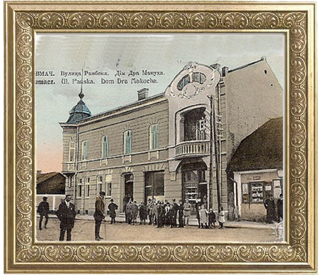
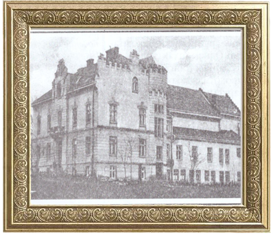

Архітектура міста
На кінець XVIII ст. Тлумач мав вигляд типового феодального містечка з окремими вулицями: Тисменицькою, Палагицькою, Войтівською та кількома меншими вуличками. Працювали дві школи, будинок убогих (так називалась лікарня).  У реєстровій книзі за 1450 рік Тлумач записаний як місто воєводства руського, в якому найбільше розвинуті ремесла ковалів, сідлярів, м’ясників, млинарів, цирульників, теслярів, гончарів.  Про особливість кожної історичної епохи м.Тлумача розповідає її архітектура. Окрасою Тлумача був колись костел Св. Анни, церква Святої Трійці, польська читальня Сокіл, шистикласна народна школа, учительська семінарія ім.Табачковського нинішній головний корпус аграрного коледжу.